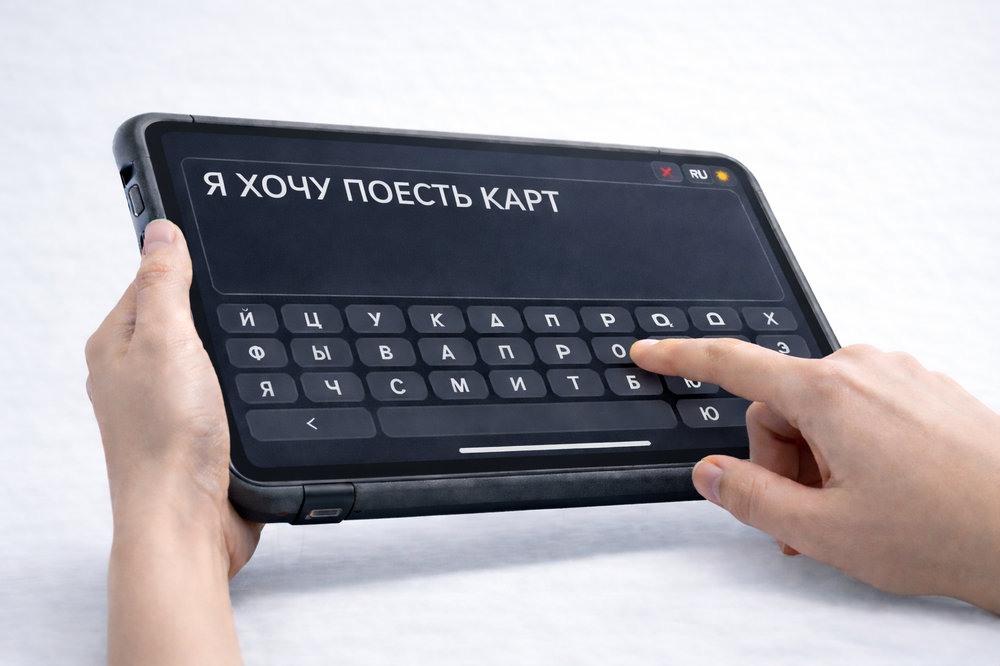
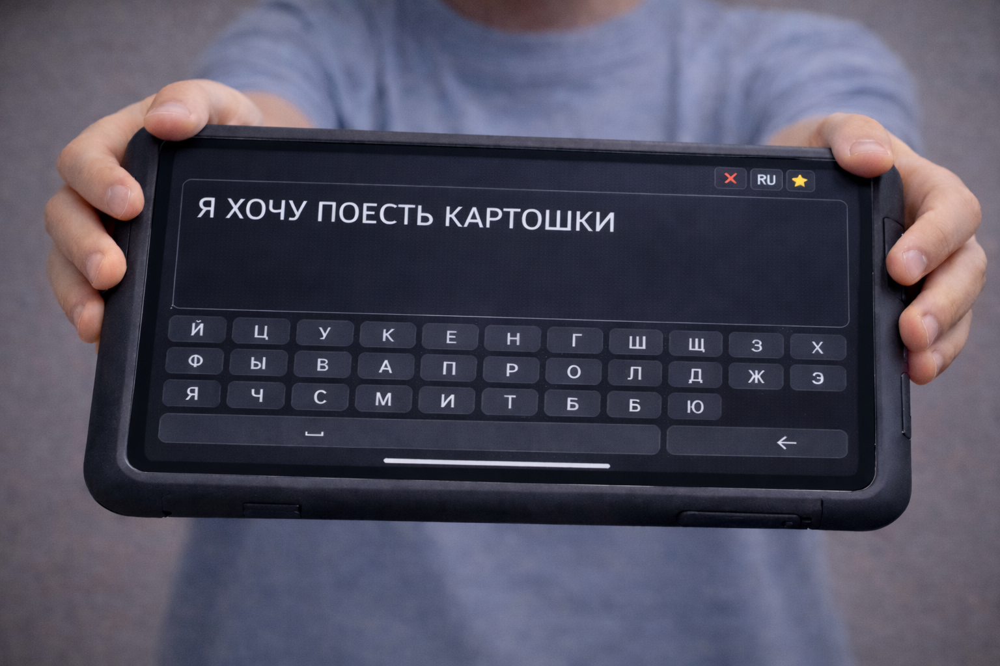
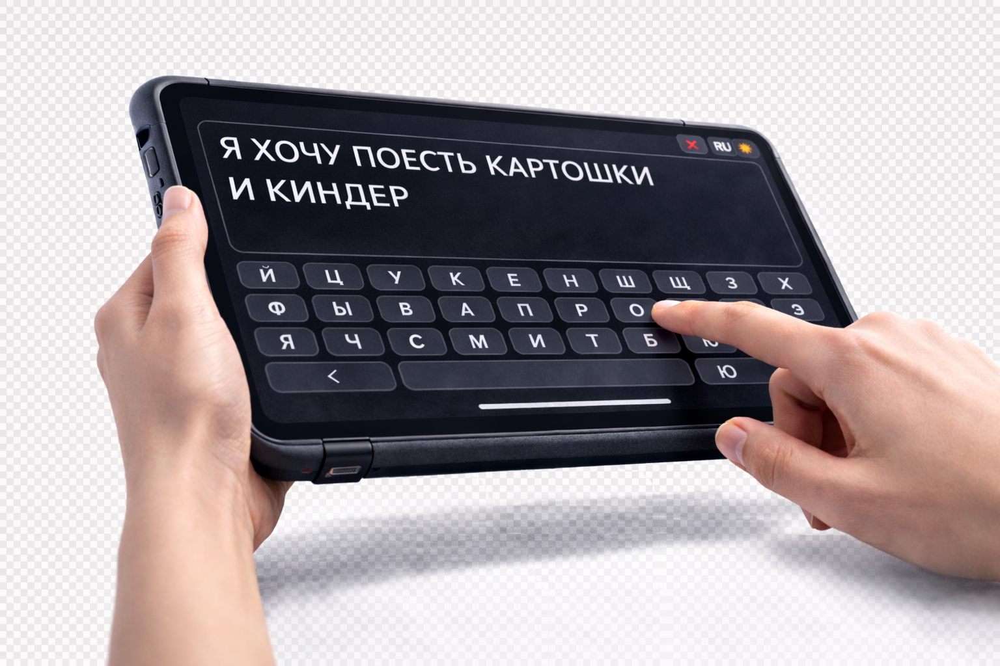

PECS
Сильные стороны: Структура коммуникации. Быстрый старт. Низкий порог входа.
НО: Набор карточек конечен: новые смыслы не формулируются без расширения набора.
Требование: Среда должна быть открытой для новых слов и масштабируемой по словарю.
Просто не голосом.
Каждый этап уже показал сильные стороны — и свои границы.
Требования к следующей среде

PECS
Сильные стороны: Структура коммуникации. Быстрый старт. Низкий порог входа.
НО: Набор карточек конечен: новые смыслы не формулируются без расширения набора.
Требование: Среда должна быть открытой для новых слов и масштабируемой по словарю.
Требования к следующей среде

Магнитные буквы
Сильные стороны: Свобода сборки слов. Моторная вовлеченность. Понятная сетка.
НО: Количество букв физически ограничено, а набор может ломаться и теряться.
Требование: Среда должна поддерживать неограниченный словарь и не зависеть от физического набора.
Требования к следующей среде

Бумага
Сильные стороны: Самостоятельное письмо. Личное авторство. Гибкость использования.
НО: Записи распадаются по разным листам: нет единой истории и общего контекста.
Требование: Среда должна сохранять записи в едином пространстве и поддерживать их структуру.
Требования к следующей среде

Пластилин
Сильные стороны: Символ формируется через движение. Высокая моторная вовлеченность. Единая среда для коммуникации и творчества. Наглядность формы.
НО: Длинные слова и фразы трудно переносить, хранить и предъявлять целиком.
Требование: Среда должна принимать полные формулировки мысли без подсказок и подмены.
Требования к следующей среде

Телевизор / поиск
Сильные стороны: Визуальная опора на правильное написание. Тренировка орфографии.
НО: Это внешний потребительский интерфейс, а не личный контур коммуникации.
Требование: Среда должна быть личным инструментом коммуникации, а не внешним интерфейсом потребления.
Требования к следующей среде

Эрудит
Сильные стороны: Предсказуемая сетка. Стабильная форма поля. Концентрация.
НО: Размер поля фиксирован: длина мысли ограничивается пространством.
Требование: Среда должна сохранять предсказуемость формы и масштабироваться по длине мысли.
Все требования сходятся к одному: среда должна быть предсказуемой, масштабируемой, личной и не вмешивающейся в формулировку мысли.
Проектирование началось с изучения. Чертежа.
Не с выбора инструмента и не с выбора цвета.
С вопроса о среде, созданной только для письма.
Две строки стали базовой единицей экрана: мысль видна целиком и сразу проверяется взглядом, без разрыва на фрагменты.
Скролл исключён сознательно. Когда полотно движется, внимание уходит с формулировки на навигацию, а нам важна непрерывность письма и показа.
Ландшафт и крупная предсказуемая раскладка дают устойчивый жест: моторика повторяется от сообщения к сообщению, а текст читается одинаково уверенно и для автора, и при предъявлении собеседнику.



Мысль формируется.
Экран направлен к себе. Текст остаётся в личном пространстве.
Привычный процесс — без лишних возможностей и отвлечений.

Мысль готова к предъявлению.
Устройство меняет положение. Появляется намерение показать.
Это переход из внутреннего режима в режим коммуникации.
Способ показа может быть любым удобным.


Мысль предъявлена.
Экран обращён к собеседнику.
Текст удобно читаем в любом варианте показа.


Коммуникация продолжается.
Написал → показал → получил реакцию → продолжил.
Жест формирует устойчивый цикл взаимодействия.
Мы проектируем не “приложение”, а отдельный инструмент коммуникации.

ПЛАНКА выглядит и ощущается как устройство для коммуникации: крупный экран, предсказуемая раскладка, минимум отвлекающих элементов. Ребёнок берёт её не “поиграть”, а “сказать”.

Мы делаем специальный задник/крышку, чтобы устройство запоминалось как отдельный предмет — узнаваемый, устойчивый, “свой”. Не просто гаджет, а конкретный инструмент, который помогает выражать мысли.

Свобода и контроль собственной мысли.

Поверхность понимания. Не вмешательство.
Контуры не пересекаются.
Центр — устойчивые, часто предъявляемые кванты мысли.
Периферия — новые и ситуативные.
Рост — это расширение пространства мысли при сохранении формы.
Предъявленная мысль становится устойчивой и возвращаемой.